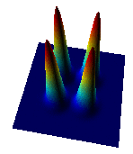

Simulating differential equation models in R |
 |
Karline
Soetaert, Royal Netherlands Institute for Sea Research,
NIOZ, The Netherlands.
Thomas
Petzoldt, Dresden University of Technology, Faculty of
Environmental Sciences, Germany.
Differential equations can be used to describe exchanges of matter, energy, information or any other quantities as they vary in time and/or space.
We invite you to experience how nicely and flexibly R can be used to explore time-dependend behavior of dynamical systems, that occur in any field of science: mathematics, natural and life sciences, economics, finance and engineering.
We will give an overview over the different solver functions available in packages deSolve and rootSolve. Practical examples will show that even numerically challenging systems can be efficiently solved in R and how external data can be handled. An outlook will demonstrate how partial differential equations (PDE) for reaction diffusion systems in 1D, 2D or 3D can be handled in R and how impressive computation performance can be approached.
The guided web exercises are made with InkScape and work best with Mozilla or Chrome.
Pre-conference discussion is possible on the mailig list: r-sig-dynamic-models@r-project.org
useR!2014 conference --
deSolve project page
Interactive web applications of deSolve models at rforscience.com using
the
{kind=link}
{kind=link}
{kind=link}